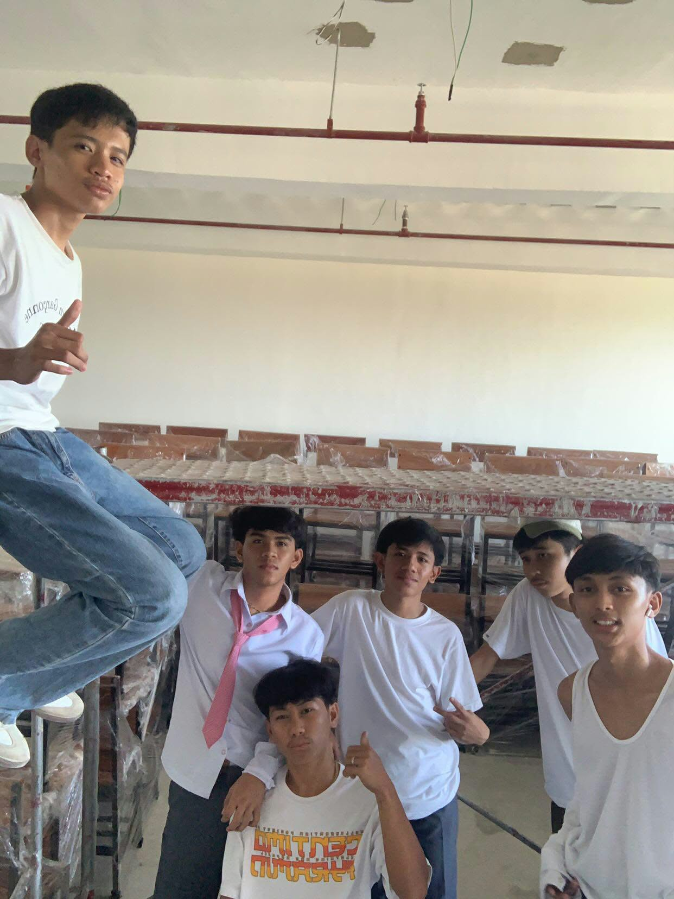

My Senior High School days were an important part of my life. It was a time when I learned many new things and experienced different situations that helped me grow as a student.
During my SHS days, I met new classmates and made new friends. We worked together on different activities and school projects. There were times when school was difficult, but I tried my best to complete my tasks and learn from my experiences.
One of the things I enjoyed during Senior High School was spending time with my classmates. We helped each other when we had activities and assignments. We also shared funny moments that became good memories.
I also became more familiar with computers and technology. I learned about programming and creating simple websites. These activities helped me become more interested in computers.
My SHS experience taught me to become more responsible with my time and school work. I learned that completing projects requires patience, effort, and practice.
I also learned that making mistakes is part of learning. Whenever I had problems with my activities, I tried to understand the problem and find a way to solve it.
Some of my favorite memories were the times when I was with my classmates. We shared jokes, helped each other with school work, and enjoyed our time together.
The pictures and activities from my SHS days remind me of the people I met and the experiences I had. These memories are important to me because they are part of my journey as a student.
After Senior High School, I want to continue learning and improve my skills. I want to learn more about technology, programming, and other things that can help me in the future.
My SHS days may have had challenges, but they also gave me valuable lessons and memories. I will always remember this part of my student life.
"Keep learning and never give up."